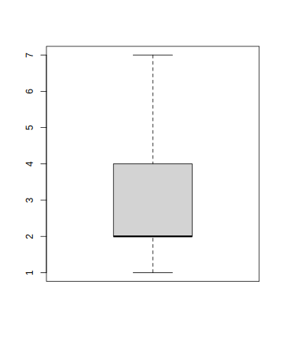

Sitzung 3
3.7.24 Lösung 3-1
3.7.24.1 a)
Zunächst brauchen wir das arithmetische Mittel:
| Schritt | Musterlösung |
|---|---|
| Formel | \(\bar{x}=\frac{\sum\limits_{i=1}^{n}x_{i}}{n}\) |
| Einsetzen | \(\bar{x}=\frac{-170{,}47}{9}\) |
| Ergebnis | \(\bar{x}=-18{,}94\) |
Und die Standardabweichung:
| Schritt | Musterlösung |
|---|---|
| Formel | \(s=\sqrt{s^2}\) |
| Einsetzen | \(s=\sqrt{61{,}08}\) |
| Ergebnis | \(s\approx7{,}82\) |
Dann lässt sich die Formel bestimmen:
| Schritt | Musterlösung |
|---|---|
| Formel | \(z_{i} = \frac{x_{i} - \bar{x}}{s}\) |
| Einsetzen | \(z_{i} = \frac{x_{i} +18{,}94}{7{,}82}\) |
Und schließlich die einzelnen Werte berechnen. Hier sind die Berechnungen zum Prüfen ausformuliert, das wird in der Klausur nicht für jeden Wert erwartet.
| \(x_i\) | Berechnung |
|---|---|
| -16,93 | \(z_{1}=\frac{-16{,}93+18{,}94}{7{,}82}\approx0{,}26\) |
| -16,09 | \(z_{2}=\frac{-16{,}09+18{,}94}{7{,}82}\approx0{,}36\) |
| -10,97 | \(z_{3}=\frac{-10{,}97+18{,}94}{7{,}82}\approx1{,}02\) |
| -3,77 | \(z_{4}=\frac{-3{,}77+18{,}94}{7{,}82}\approx1{,}94\) |
| -25,55 | \(z_{5}=\frac{-25{,}55+18{,}94}{7{,}82}\approx-0{,}85\) |
| -20,57 | \(z_{6}=\frac{-20{,}57+18{,}94}{7{,}82}\approx-0{,}21\) |
| -23,61 | \(z_{7}=\frac{-23{,}61+18{,}94}{7{,}82}\approx-0{,}60\) |
| -25,90 | \(z_{8}=\frac{-25{,}9+18{,}94}{7{,}82}\approx-0{,}89\) |
| -27,08 | \(z_{9}=\frac{-27{,}08+18{,}94}{7{,}82}\approx-1{,}04\) |
3.7.24.2 b)
Zunächst die Standardabweichung:
| Schritt | Musterlösung |
|---|---|
| Formel | \(s=\sqrt{s^2}\) |
| Einsetzen | \(s=\sqrt{13{,}02}\) |
| Ergebnis | \(s\approx3{,}61\) |
Dann die Formel:
| Schritt | Musterlösung |
|---|---|
| Formel | \(z_{i} = \frac{x_{i} - \bar{x}}{s}\) |
| Umformen | \(z_{i} = \frac{x_{i} - \bar{x}}{s}\) |
| Einsetzen | \(x_{i} = z_{i} \cdot 3{,}61 + 221{,}54\) |
Schließlich die einzelnen Werte:
| \(z_i\) | Berechnung |
|---|---|
| 1,19 | \(x_{1} = 1{,}19 \cdot 3{,}61 + 221{,}54\approx225{,}84\) |
| -1,87 | \(x_{2} = -1{,}87 \cdot 3{,}61 + 221{,}54\approx214{,}79\) |
| 1,50 | \(x_{3} = 1{,}5 \cdot 3{,}61 + 221{,}54\approx226{,}95\) |
| -0,44 | \(x_{4} = -0{,}44 \cdot 3{,}61 + 221{,}54\approx219{,}95\) |
| 2,96 | \(x_{5} = 2{,}96 \cdot 3{,}61 + 221{,}54\approx232{,}23\) |
| 0,20 | \(x_{6} = 0{,}2 \cdot 3{,}61 + 221{,}54\approx222{,}26\) |
| 3,83 | \(x_{7} = 3{,}83 \cdot 3{,}61 + 221{,}54\approx235{,}37\) |
| 0,54 | \(x_{8} = 0{,}54 \cdot 3{,}61 + 221{,}54\approx223{,}49\) |
| -2,05 | \(x_{9} = -2{,}05 \cdot 3{,}61 + 221{,}54\approx214{,}14\) |
| 0,18 | \(x_{10} = 0{,}18 \cdot 3{,}61 + 221{,}54\approx222{,}19\) |
| -0,23 | \(x_{11} = -0{,}23 \cdot 3{,}61 + 221{,}54\approx220{,}71\) |
| 0,90 | \(x_{12} = 0{,}9 \cdot 3{,}61 + 221{,}54\approx224{,}79\) |
3.7.25 Lösung 3-2
3.7.25.1 a)
Zunächst geht es darum, die \(x\)-Werte in \(z\)-Werte zu transformieren.
| Schritt | Lösung |
|---|---|
| Formel | \(z_{i} = \frac{x_{i} - \mu}{\sigma}\) |
| Einsetzen | \(z_{i} = \frac{x_{i} - 32{,}2}{4{,}4}\) |
Durch Einsetzen ergeben sich die folgenden Werte. (So ausführlich muss es in der Klausur nicht sein.)
| \(x_i\) | Berechnung |
|---|---|
| 39,58 | \(z_{1}=\frac{39{,}58-32{,}2}{4{,}4}\approx1{,}68\) |
| 17,01 | \(z_{2}=\frac{17{,}01-32{,}2}{4{,}4}\approx-3{,}45\) |
| 31,38 | \(z_{3}=\frac{31{,}38-32{,}2}{4{,}4}\approx-0{,}19\) |
| 44,48 | \(z_{4}=\frac{44{,}48-32{,}2}{4{,}4}\approx2{,}79\) |
| 41,04 | \(z_{5}=\frac{41{,}04-32{,}2}{4{,}4}\approx2{,}01\) |
| 30,85 | \(z_{6}=\frac{30{,}85-32{,}2}{4{,}4}\approx-0{,}31\) |
Für die positiven \(z\)-Werte können die Unterschreitungswahrscheinlichkeiten direkt in der Wertetabelle nachgeschaut werden. Für negative \(z\)-Werte gilt die Formel:
\[ P(z\leq -z_p) = 1-P(z \leq z_p) \]
Die Unterschreitungswerte ergeben:
| \(x_i\) | \(z_i\) | Formel | Ergebnis | In Prozent |
|---|---|---|---|---|
| 39,58 | 1,68 | \(p=P(z \leq 1{,}68)\) | \(p \approx 0{,}9535\) | 95,35% |
| 17,01 | -3,45 | \(p=1-P(z \leq 3{,}45)\) | \(p \approx 0{,}0003\) | 0,03% |
| 31,38 | -0,19 | \(p=1-P(z \leq 0{,}19)\) | \(p \approx 0{,}4247\) | 42,47% |
| 44,48 | 2,79 | \(p=P(z \leq 2{,}79)\) | \(p \approx 0{,}9974\) | 99,74% |
| 41,04 | 2,01 | \(p=P(z \leq 2{,}01)\) | \(p \approx 0{,}9778\) | 97,78% |
| 30,85 | -0,31 | \(p=1-P(z \leq 0{,}31)\) | \(p \approx 0{,}3783\) | 37,83% |
3.7.25.2 b)
Es handelt sich um Überschreitungswahrscheinlichkeiten, aber aus der Tabelle lassen sich nur Unterschreitungswerte ablesen. Weil die Normalverteilung symmetrisch ist, gilt aber:
\[ P(x>x_p)=1-P(x\leq x_p)\]
So lässt sich jeweils sagen:
| Überschr. \(p_{i}\) | Unterschr. \((1-p_{1})\) | Berechnung | …. | Ergebnis |
|---|---|---|---|---|
| 0,0005 | 0,9995 | \(P(z \leq z_{1}) = 0{,}9995\) | \(z_{1} \approx 3{,}29\) | |
| 0,0010 | 0,9990 | \(P(z \leq z_{2}) = 0{,}999\) | \(z_{2} \approx 3{,}09\) | |
| 0,0500 | 0,9500 | \(P(z \leq z_{3}) = 0{,}95\) | \(z_{3} \approx 1{,}64\) | |
| 0,1300 | 0,8700 | \(P(z \leq z_{4}) = 0{,}87\) | \(z_{4} \approx 1{,}13\) | |
| 0,5000 | 0,5000 | \(P(z \leq z_{5}) = 0{,}5\) | \(z_{5} \approx 0{,}00\) | |
| 0,9000 | 0,1000 | \(P(z \leq -z_{6}) = 1-0{,}1 = 0{,}9\) | \(-z_{6} \approx 1{,}28\) | \(z_{6} \approx -1{,}28\) |
| 0,9900 | 0,0100 | \(P(z \leq -z_{7}) = 1-0{,}01 = 0{,}99\) | \(-z_{7} \approx 2{,}33\) | \(z_{7} \approx -2{,}33\) |
| 0,9999 | 0,0001 | \(P(z \leq -z_{8}) = 1-0{,}0001 = 0{,}9999\) | \(-z_{8} \approx 3{,}72\) | \(z_{8} \approx -3{,}72\) |
Für die Rücktransformation gilt die Formel:
\[x_{i} = z_{i} \cdot \sigma + \mu\]
| \(z_i\) | Einsetzen | \(x_i\) |
|---|---|---|
| 3,29 | \(x_{1} = 3{,}29 \cdot 4{,}4 + 32{,}2\) | \(x_{1}\approx46{,}68\) |
| 3,09 | \(x_{2} = 3{,}09 \cdot 4{,}4 + 32{,}2\) | \(x_{2}\approx45{,}80\) |
| 1,64 | \(x_{3} = 1{,}64 \cdot 4{,}4 + 32{,}2\) | \(x_{3}\approx39{,}42\) |
| 1,13 | \(x_{4} = 1{,}13 \cdot 4{,}4 + 32{,}2\) | \(x_{4}\approx37{,}17\) |
| 0 | \(x_{5} = 0 \cdot 4{,}4 + 32{,}2\) | \(x_{5}\approx32{,}20\) |
| -1,28 | \(x_{6} = -1{,}28 \cdot 4{,}4 + 32{,}2\) | \(x_{6}\approx26{,}57\) |
| -2,33 | \(x_{7} = -2{,}33 \cdot 4{,}4 + 32{,}2\) | \(x_{7}\approx21{,}95\) |
| -3,72 | \(x_{8} = -3{,}72 \cdot 4{,}4 + 32{,}2\) | \(x_{8}\approx15{,}83\) |
3.7.25.3 c)
Die mittleren 95% der Werte liegen zwischen einem unteren Wert \(x_{2{,}5\%}\) (der zu 2,5% unterschritten wird) und einem oberen Wert \(x_{97{,}5\%}\) (der zu 2,5% überschritten wird).
Der obere \(z\)-Wert lässt sich leicht finden: \(z_{97{,}5\%} \approx 1{,}96\)
Durch Symmetrie wissen wir dann auch, dass: \(z_{2{,}5\%} \approx -1{,}96\)
Nun noch rückwärts transformieren:
| Schritt | Lösung |
|---|---|
| Formel | \(x_{i} = z_{i} \cdot \sigma + \mu\) |
| Untergrenze: Einsetzen | \(x_{u} = -1{,}96 \cdot 4{,}4 + 32{,}2\) |
| Untergrenze: Ergebnis | \(x_{u}\approx23{,}58\) |
| Obergrenze: Einsetzen | \(x_{o} = 1{,}96 \cdot 4{,}4 + 32{,}2\) |
| Obergrenze: Ergebnis | \(x_{o}\approx40{,}82\) |
| Antwortsatz | Die mittleren 95 Prozent der Werte liegen zwischen 23,58 und 40,82. |
3.7.25.4 d)
Es ist immer einfacher, mit Unterschreitungswahrscheinlichkeiten zu arbeiten. Zwischen 30 und 40 heißt auch: unter 40, aber nicht unter 30. Formal sieht das so aus:
\[P(30 < x \leq 40) = P(x \leq 40) - P(x \leq 30)\]
Diese Unterschreitungswahrscheinlichkeiten bestimmen wir wieder über die \(z\)-Transformation:
| Schritt | Lösung |
|---|---|
| Formel | \(z_{i} = \frac{x_{i} - \mu}{\sigma}\) |
| Untergrenze: \(z\)-Wert | \(z_{u}=\frac{30-32{,}2}{4{,}4}\approx-0{,}50\) |
| Untergrenze: Unterschr. | \(p \approx 0{,}3085\) |
| Obergrenze: \(z\)-Wert | \(z_{o}=\frac{40-32{,}2}{4{,}4}\approx1{,}77\) |
| Obergrenze: Unterschr. | \(p \approx 0{,}9616\) |
| Intervall | \(P(30 < x \leq 40) = P(x \leq 40) - P(x \leq 30)\) |
| Intervall einsetzen | \(P(30 < x \leq 40) \approx P(z \leq 0{,}9616) - P(z \leq 0{,}3085)\) |
| Intervall Ergebnis | \(P(30 < x \leq 40) \approx 0{,}6531\) |
| Antwortsatz | Ein zufälliger Wert der Verteilung liegt mit 65,31-prozentiger Wahrscheinlichkeit zwischen 30 und 40. |
3.7.26 Lösung 3-3
3.7.26.1 a)
Siehe b)
3.7.26.2 b)
Die Dichtefunktion mit kritischem Wert sollte in etwa so aussehen:

3.7.26.3 c)
\[z_p=\frac{x_p- \mu}{\sigma} = \frac{10-9,01}{2,23}\approx0,44\]
3.7.26.4 d)
\[p=P(z<z_p)\approx P(z<0,44)\approx0,6700\]
Die Wahrscheinlichkeit, dass der Deich unbeschädigt bleibt, beträgt 67%.
3.7.27 Lösung 3-4
3.7.27.1 a)
Die Übertretungswahrscheinlichkeit beträgt:
\[P(z>z_p) = 1- P(z<z_p) \approx 1-0,6700 = 0,3300 = 33\% \]
3.7.27.2 b)
Für \(x_p=12\) ergibt sich:
\[ z_p=\frac{x_p- \mu}{\sigma} = \frac{12-9,01}{2,23}\approx1,34 \]
Und für die Übertretungswahrscheinlichkeit:
\[P(z>z_p) = 1- P(z<z_p) \approx 1-0,9099 = 0,0901= 9,01\% \]
3.7.27.3 c)
Wir kennen \(P(x < 12)\approx0,9099\) aus Aufgabe 2 b) und \(P(x<10)\approx0,6700\) aus Aufgabe 1 d). Also rechnen wir:
\[P(10<x<12) = P(x<12) - P(x<10) \approx 0,9099 - 0,6700 = 0,2399\]
3.7.27.4 d)
Für die Obergrenze soll gelten: \(P(x<x_o) = 0,9\). Der Tabelle entnehmen wir \(z_o \approx 1,28\). Entsprechend ist \(z_u\approx-1,28\).
Die Umkehrung der \(z\)-Transformation ergibt:
\[\begin{aligned} x_o&=z_o\cdot\sigma + \mu\approx1,28\cdot2,23 +9,01\approx11,86\\ x_u&=z_u\cdot\sigma + \mu\approx-1,28\cdot2.23 +9.01\approx6,16 \end{aligned}\]
Die mittleren 80% der Werte liegen also zwichen 6,16 und 11,86 m.
3.7.28 Lösung 3-5
3.7.28.1 a)
\[p=P(x<x_p)=1-P(x>x_p)=1-\frac{1}{200}=1-0,005=0,995\]
3.7.28.2 b)
\[z_{99,5\%}\approx2,58\]
3.7.28.3 c)
\[x_{99,5\%}=z_{99,5\%}\cdot\sigma + \mu\approx2,58\cdot2,23+9,01\approx14,76\]
Der neue Deich muss 14,76 m hoch sein.
3.7.29 Lösung 3-6
3.7.29.1 a)
- \(z_p=1\) und \(P(z<1)\approx84,13\%\), also \(P(z>1)\approx15,87\%\)
3.7.29.2 b)
- \(z_p=-2\) und \(P(z<-2) = 1-P(z<2) \approx 1-0,9772 = 0,0228\)
- Es kann also 2,28 Mal in 100 Jahren (oder: in etwa 2 von 100 Jahren, in weniger als 3 von 100 Jahren) mit weniger als 200 mm Regen gerechnet werden.
3.7.29.3 c)
- \(z_u=-2\) und \(P(z<z_u)\approx 0,0228\) (siehe b)
- \(z_o=\frac{x_o- \mu}{\sigma}=\frac{550-400}{100}=1,5\) und \(P(z<z_o) \approx 0,9332\)
- \(P(200 < x < 550) = P(x < 550) - P(x<200) \approx 91,04\%\)
3.7.29.4 d)
- Gesucht ist \(x_p\), für das gilt: \(P(x>x_p) = \frac{2}{100}=0,02\)
- Daraus folgt: \(P(x<x_p) = 0,98\) und \(z_p\approx2,05\)
- \(x_p = 605\)
3.7.29.5 e)
- \(z_{12,5\%}\approx -1,15\) und \(z_{87,5\%}= 1,15\)
- Die mittleren 75% liegen zwischen \(x_u=285\) und \(x_o=515\) mm.
3.7.30 Lösung 3-7
Für die Ziegelei:
| Schritt | Musterlösung |
|---|---|
| Varianz: Formel | \(s^2=\frac{\sum\limits_{i=1}^{n}(x_{i}-\bar{x})^2}{n-1}\) |
| Varianz: Einsetzen | \(s^2_x=\frac{610{,}83}{5}\) |
| Varianz: Ergebnis | \(s^2_x=122{,}17\) |
| Standardabweichung: Formel | \(s=\sqrt{s^2}\) |
| Standardabweichung: Ergebnis | \(s_x\approx11{,}05\) |
| Variationskoeffizient: Formel | \(v=\frac{s}{|\bar{x}|}\cdot100\%\quad\) |
| Variationskoeffizient: Einsetzen | \(v\approx\frac{11,54}{74,67}\cdot100\%\quad\) |
| Variationskoeffizient: Ergebnis | \(v \approx 12{,}97\%\) |
Für das Möbellager:
| Schritt | Musterlösung |
|---|---|
| Varianz: Formel | \(s^2=\frac{\sum\limits_{i=1}^{n}(x_{i}-\bar{x})^2}{n-1}\) |
| Varianz: Einsetzen | \(s^2_y=\frac{4015{,}33}{5}\) |
| Varianz: Ergebnis | \(s^2_y=803{,}07\) |
| Standardabweichung: Formel | \(s_y=\sqrt{s^2_y}\) |
| Standardabweichung: Ergebnis | \(s_y\approx28{,}34\) |
| Variationskoeffizient: Formel | \(v=\frac{s}{|\bar{x}|}\cdot100\%\quad\) |
| Variationskoeffizient: Einsetzen | \(v\approx\frac{11,54}{74,67}\cdot100\%\quad\) |
| Variationskoeffizient: Ergebnis | \(v \approx 38{,}13\%\) |